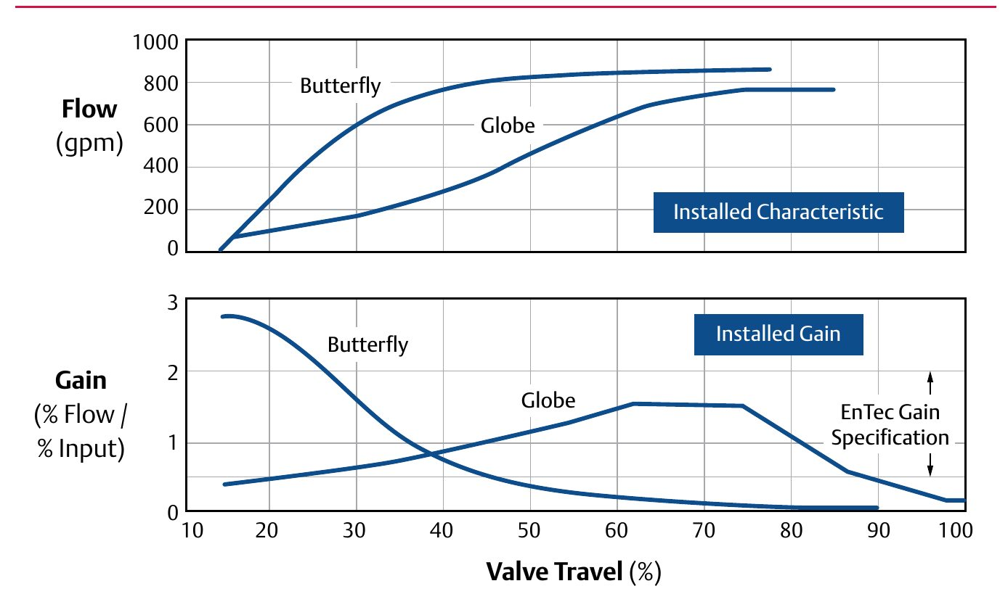

Control Range: Globe vs. Butterfly

The globe's gain curve stays inside the EnTec spec band across roughly the middle-to-upper half of its travel; the butterfly's curve only stays inside that band over a much narrower window near the low end of travel — a wider control range, read directly off where each curve crosses the spec bracket.
After Control Valve Handbook, 6th ed., Fig. 2.6 — used directly. Component Index: cvh-cmp-valve-style-control-range-comparison.